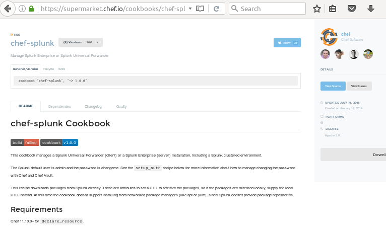
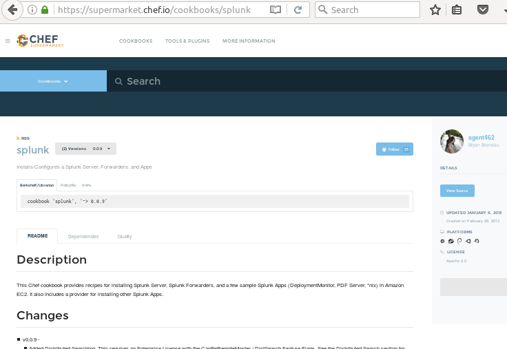

class: center, middle # Tour of Cookbook Development --- > Let's build a cookbook to configure Splunk forwarding! # Design - does a cookbook already exist? Laziness > Hubris - do we wrap the cookbook? - can we include directly in an existing role? - do we expect a new role? ??? No firm rules here, though do try to use well written and supported cookbooks when available. Wrapping is sometimes necessary if we wish to override cookbook elements like templates though other methods exist. Do consider the interaction with the base roles already in common use --- # Selecting a Community Cookbook - search 'https://supermarket.chef.io' if you find one or more, look at these things to judge a cookbook's utility: - community behind cookbook- number of contributors and followers - documentation - plenty of attributes - does it have tests? - run through test-kitchen - look at the code itself - run through linters rubocop and foodcritic --- # Splunk has two: Maintained by Chef  --- Maintained by a community member  ??? Presenter: now divert to a browser and compare the two <a href="https://supermarket.chef.io/cookbooks/splunk">agent462's cookbook</a> <a href="https://supermarket.chef.io/cookbooks/chef-splunk">Chef's cookbook</a> Note that Chef's version has significantly more options and attributes. May be more flexible than agent462's. However, the Chef cookbook will likely be more complicated to implement. --- # What needs to happen? - install Splunk distribution - configure - start services --- # Wrapping the Cookbook Wrapping a cookbook: - create a new cookbook - include the cookbook to be wrapped - customize as necessary ## Create the cookbook from boilerplate: ``` chef generate cookbook splunk-forwarder cd splunk-forwarder git checkout -b prod git checkout -b dev git branch -d master ``` --- ## Add to GitHub ``` git remote add origin <url> git push -u origin ``` ## Add Automation: - Create project in [Jenkins](http://whidby.fhcrc.org/job/scicomp-cookbooks) (copy an existing one like scicomp-desktop) - Install the [automatic-garbanzo](https://github.com/FredHutch/automatic-garbanzo) at the top level of the wrapper ``` curl -L https://github.com/FredHutch/automatic-garbanzo/archive/2.1.0.tar.gz | tar -xzv --strip-components=1 -f - ``` ## Add cookbook to metadata.rb: ``` grep depends metadata.rb depends 'chef-splunk', '~> '1.6.0' ``` --- ## Linting ``` rake test ``` ## Converging ``` kitchen converge ``` --- ## Build and Publish ``` git checkout prod git merge --ff-only dev # edit metadata.rb, update version as necessary git push git checkout dev git merge --ff-only dev ``` Pushing on the branch `prod` will trigger jenkins to tag and upload artifacts to Chef and Supermarket servers --- # Now Make it Work - currently does nothing- `include_recipe` merely makes resources available - add a recipe to install the forwarder: ``` chef generate recipe forwarder ``` - reading cookbook docs, we see we have a recipe called `install_forwarder` ``` cat recipes/forwarder.rb # Cookbook Name:: # Recipe:: install_forwarder include_recipe 'chef-splunk::client' ``` This will run the recipe from the wrapped cookbook. Now we need to fiddle with the install --- # Attributes Good recipes use attributes- in this case we need to set: - `node['splunk']['accept_license']` - `node['splunk']['server']['url']` - `node['splunk']['forwarder']['url']` - `node['splunk']['outputs_conf']` - ? ---